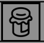

Chapter 1
Subsections of Manual
Installation
Djazz needs no special installation. Download the djazz folder here. Open Max. Select Options from the menu bar at the top of the screen.
Select File Preferences from the dropdown menu that appears.
In the File Preferences window that appears, select “choose path.”
In the file browser menu that appears, select the “djazz” folder you have just downloaded.
Djazz uses externals that are included in the Djazz folder. Thye do not require extra installation.
Main Window

1. MIDI/AUDIO INTERFACE SELECTOR

Clicking on the button labeled “MIDI” or “Audio” will open the MIDI or Audio interface window, respectively. You can also use the key commands “m” to open/close the MIDI window or “a” to open/close the audio window.
2. BEAT INPUT
Input Selector
Djazz plays a beat each time it receives a message (a “tap,” or “click”), if it is engaged (how to engage Djazz will be explaind below). When not engaged, it will not play when a beat message is received. When this is the case, you can click on measures or chapters (“cells” of the grid) in the song grid without triggering playback. Once engaged, djazz will begin playing on the next beat after a cell has been clicked on.
The cells of the grid change color depending on whether Djazz is engaged and whether a cell is currently playing or not. The colors represent the following:
Light gray: not the current measure/chapter of the song Dark gray: the current measure measure/chapter of the song, but Djazz is not engaged Blue: the current measure measure/chapter of the song, but not playing Orange: the current measure measure/chapter of the song, and playing
There are three ways to send Djazz a beat message; you select one from the dropdown menu: “manual,” “metronome,” or “remote.” Selecting from the dropdown menu will change the controls on the left side of this box. When one option is selected, the other two are not responsive.
Metronome

- The button marked with a triangle turns the metronome on and off. When you turn this button on and then select a grid cell, the metronome will trigger a new beat each time it clicks, beginning with the beat represented by the grid cell. No beat will be triggered until a grid cell has been selected.
- The number selector sets the metronome tempo. This is automatically set when a new song is loaded, but you can change it.
- This flashes each time the metronome sends a beat.
Manual

- The triangle button engages Djazz.
- Clicking on the circle button sends Djazz a beat message. You can also press the space bar to send a manual click.
Remote
This will send a beat message to Djazz every time a MIDI note on message is received (i.e., with a non-zero velocity) on any channel.
- The dropdown menu selects the MIDI input port for the click.
- The triangle button engages Djazz.
- This flashes each time a beat is received.
Click sound selector
The right-hand side of the window lets you change the sound and output port of the click.
- Changes the pitch of the click. The number indicates the MIDI value of the pitch.
- The channel of the click.
- The volume of the click
- Mutes/unmutes the click
- The output port of the click.
3. Song selector

To load a song grid, select a song using one of these controls. Songs are loaded by selecting folders, not individual files. Each folder contains various files pertaining to the song like scores and JSON metadata files.
- Drag and drop a song folder here.
- Browse for a song folder. To select a song, click on its folder.
- Clear the current song.
- Select a preloaded song from the dropdown menu.
4. SONG GRID
When a song is loaded, its grid will appear.
Chapter Select
 At the top are listed the “chapters” of the song–different sections like verses, choruses, and bridges. Clicking on a chapter will take you to the first measure of the chapter. If Djazz is engaged, it will start playing from here when the next beat is received.
At the top are listed the “chapters” of the song–different sections like verses, choruses, and bridges. Clicking on a chapter will take you to the first measure of the chapter. If Djazz is engaged, it will start playing from here when the next beat is received.
Bar Select
 When a chapter is selected, the bars in the chapter are shown below it. Each bar contains the number of beats given by the song’s time signature. Clicking on a bar will take you to the first beat in the bar. If Djazz is engaged, it will start playing from here when the next beat is received.
When a chapter is selected, the bars in the chapter are shown below it. Each bar contains the number of beats given by the song’s time signature. Clicking on a bar will take you to the first beat in the bar. If Djazz is engaged, it will start playing from here when the next beat is received.
Rewind-to-beginning Button
Click to go to the beginning (first bar of first chapter) of the song.
When the “lock” button next to the rewind button is on, Djazz will rewind to the beginning of the song every time it is disengaged (i.e., when the metronome is turned off, or when the engage button is unselected in manual or remote beat input.)
Loop-Chapter/Song Button
 When selected, Djazz will loop the current chapter or the whole song, depending on the choice selected to the right of the button. That is, it will start from the beginning immediately when the end of the current chapter or song is reached
When selected, Djazz will loop the current chapter or the whole song, depending on the choice selected to the right of the button. That is, it will start from the beginning immediately when the end of the current chapter or song is reached
3. GLOBAL AUDIO CONTROLS
Audio On
Clicking on either the microphone-icon button or the loudspeaker-icon button will turn the audio on.
Audio In Level (Microphone)
 Controls the level of the audio input. The button labeled “M” below the microphone-icon button mutes audio input.
Controls the level of the audio input. The button labeled “M” below the microphone-icon button mutes audio input.
Audio Record Level
Controls the recorded volume level of the audio input.
Audio Out (Speakers)
 Controls the level of the global audio output. The button labeled “M” below the loudspeaker-icon button mutes audio output.
Controls the level of the global audio output. The button labeled “M” below the loudspeaker-icon button mutes audio output.
5. PLAYBACK DATA VIEW

Beats in song
When a song is loaded, this shows the first and last beat of the song.
Section is looped
Beats in section (chapter)
When a song is loaded, this shows the first and last beat of the current chapter.
Tempo
This shows the current playback tempo. When the metronome is playing, this will be the same as (sometimes fluctuating extremely slightly from) the metronome tempo. When a manual tap
Current beat
Current beat label
MIDI Window
MIDI In View
 When clicked and illuminated, the record button arms the buffer for recording. It does not start recording until the first beat that advances the grid.
When clicked and illuminated, the record button arms the buffer for recording. It does not start recording until the first beat that advances the grid.
Scores View

Score Player/Loader Window

Score Loader

Pitch Transposition


Changes the pitch of the MIDI output
Octave Transposition


Changes the octave of the MIDI output
Speed
Changes the speed of the MIDI output
Loop

Loops the previous n beats of the MIDI output
“Jam” (Improvise)

“Jam” Button
 Turns the improviser on. When this is on, the MIDI track(s) is/are not played back straight, but beats are chosen based on the harmony and the next two controls, continuity and potch range:
Continuity
 This determines the length in beats that sections of the score will be played back in sequence. Once this many beats has been played in sequence, the improviser will jump to a new section of the score.
This determines the length in beats that sections of the score will be played back in sequence. Once this many beats has been played in sequence, the improviser will jump to a new section of the score.
The maximum coninuity is 255 beats. When the “MAX” button is on, this will be the continuity–i.e., the score will be played back without improvising, i.e. jumping around through it (given that the score is < 255 beats long. If you’re using this with a score that’s longer than 255 beats and you just want to play the score straight, there’s no reason to be even using the improviser.)
 The improviser tries to match beats that have the same harmony as the current beat. By adjusting the pitch range, it will look for beats with a similar chord type but with roots above or below the current chord root. A pitch range of n will look for chords between (and including) n semitones below and n semitones above the current chord root. Set to zero, it will match the chord root exactly. Beats with different roots will be transposed to the proper harmony.
The improviser tries to match beats that have the same harmony as the current beat. By adjusting the pitch range, it will look for beats with a similar chord type but with roots above or below the current chord root. A pitch range of n will look for chords between (and including) n semitones below and n semitones above the current chord root. Set to zero, it will match the chord root exactly. Beats with different roots will be transposed to the proper harmony.
Audio Window
7. AUDIO UI
Audio Live Input – see MIDI Live Input
Recording – see MIDI Live Input
Saving a file – see MIDI Live Input
Loading a file – see MIDI Live Input
Note: to save and load an audio file, you actually save and load a folder. Just name the folder in the dialog window, and the folder will be created and appropriately named files (.wav and .json) will be saved in the folder. For loading, choose the folder from the dialog.
Audio Track
Playback & Improvising – see Midi Track
Looping sections/Repetitions – see MIDI Live Input
Audio Input
Volume dial and reset click
Mute
Audio Out
Audio Out Track
Volume dial and reset click
Solo
Mute
Volume meter
- Il y a un patch pour extraire les données de la grille des partitions audio textuelles comme celles que vous avez envoyées vers le nouveau format :
patchers/data_file_makers/text_score_to_audio_grid_data.maxpat
External Controllers
INPUT/OUTPUT DEVICES
Connect/disconnect a device
Presets for Launchpads
Grid View
Parameter controls
The preset editor window
Create a preset
Select Midi Input
Select parameter
Select color
Edit a preset
Save a preset
Load a preset
Devices tested
Launchpad Mini
Launchpad Pro MK3
Tools
- Il existe √©galement une structure de donn√©es pour les “donn√©es de la grille”, afin de faciliter le chargement, l’enregistrement et la recherche de rythmes :
patchers/data_structures/grid_data/grid_data.maxpat
- Les donn√©es de la grille sont sauvegard√©es dans les fichiers .json des chansons que j’utilise depuis le d√©but. Il existe un patch pour cr√©er les donn√©es de la grille √† la main, que je vous ai montr√© pr√©c√©demment :
patchers/data_file_makers/djazz_make_grid.maxpat
- Il existe √©galement un correctif qui permet de couper et de coller les listes lisp des donn√©es de la grille √† partir des fichiers “GridData.lisp”, ce qui les convertira en dictionnaire, les ajoutera au fichier de chansons associ√© et r√©enregistrera le fichier :
patchers/data_file_makers/djazz_lisp_grid_to_dict.maxpat
Pour l’instant, j’ai ajout√© les donn√©es de la grille √† quelques chansons pour les tester : “AllINeed”, “AllOfMe” et “AutumnLeaves”.